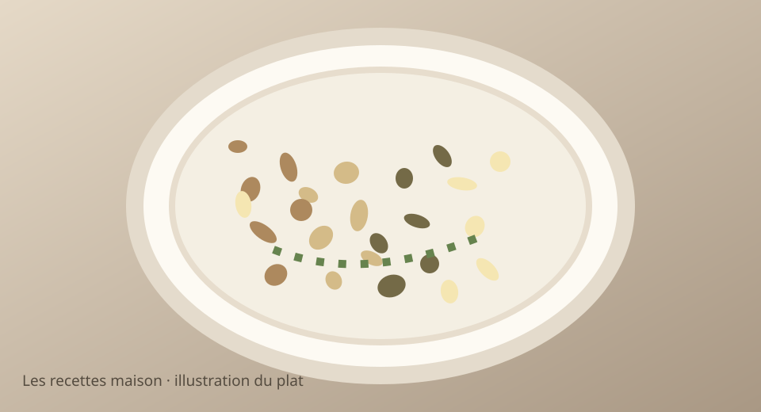

Vendredi 20 novembre 2026 · Menu validé
Risotto crémeux aux champignons, parmesan et noix

Illustration stylisée, non photographie.
Dîner pour les deux parents uniquement.
Ingrédients
- 150 g de riz à risotto cru
- 370 g de champignons de Paris
- 1 échalote
- 50 g de parmesan râpé
- 30 g de cerneaux de noix
- 600 ml de bouillon de légumes chaud (environ)
- 1 c. à café d’huile d’olive
- 1 citron (quelques gouttes, facultatif)
- Sel et poivre
Préparation simultanée, pas à pas
- Émincer les champignons et l’échalote. Faire revenir l’échalote 2 min dans l’huile, puis ajouter le riz et remuer 1 min.
- Ajouter une louche de bouillon chaud, mélanger et attendre l’absorption. Continuer progressivement pendant 18 à 22 min.
- Pendant ce temps, faire dorer les champignons dans une poêle antiadhésive 8 à 10 min, sans les entasser.
- Torréfier les noix à sec 2 min en surveillant. Les concasser grossièrement.
- Incorporer les champignons et le parmesan au riz, ajuster avec un peu de bouillon pour obtenir une texture crémeuse. Ajouter les noix et, si souhaité, quelques gouttes de citron. Servir aussitôt.
Prix et calories estimés, non vérifiés en magasin. Ajuster les quantités à l’appétit.